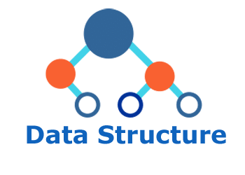

Data Structures and Algorithms

A data structure is a way of storing and organizing data in a computer.
A data structure is a collection of data elements that has a certain logical relationship, uses a certain storage structure in a computer, and encapsulates corresponding operations. It includes three aspects: logical relationships, storage relationships, and operations.
Different kinds of data structures are suitable for different kinds of applications, and some are even specifically designed for particular tasks. For example, computer networks rely on routing tables, and B-trees are highly suitable for database implementation.
Why learn data structures and algorithms?
As applications become increasingly complex and data becomes richer, data in the millions, billions, or even tens of billions will appear, and operations such as searching, inserting, or sorting such large amounts of data will become increasingly slow. Data structures are used to solve these problems.
Learning data structures and algorithms can:
- Improve code efficiencyGood data structures and algorithms can make programs run faster and use less memory
- Solve complex problems: Many practical problems require specific data structures and algorithms to be solved effectively.
- Interview EssentialsKnowledge points that are almost always tested in technical interviews
- Programming BasicsIt is the cornerstone of all advanced programming techniques
What do you need to know before reading this tutorial?
Before you start reading this tutorial, you must have basic programming knowledge, such as concepts of programming in Python or Java.
If you are not yet familiar with these concepts, we recommend that you first read ourPython TutorialorJava Tutorial。
We recommend using Python as the learning language for the following reasons:
| Features | Python | Java | C++ |
|---|---|---|---|
| Learning Difficulty | ⭐⭐ | ⭐⭐⭐ | ⭐⭐⭐⭐ |
| Syntax Conciseness | High | Medium | Low |
| Execution Efficiency | Medium | High | Very High |
| Community Support | Rich | Rich | Rich |
| Recommendation Index | ⭐⭐⭐⭐⭐ | ⭐⭐⭐ | ⭐⭐⭐ |
Data Structures and Algorithms Explanation
Data StructuresIt is like the way we organize items. Imagine your bookshelf:
- If books are stacked randomly, finding a book will be difficult (inefficient data structure).
- If they are arranged by category, author, or alphabetical order, finding a book is fast (efficient data structure).
AlgorithmsIt is the steps and methods to solve problems, just like a recipe for cooking:
- The same ingredients (data) with different cooking methods (algorithms) will produce different results
- Some methods are fast and effective, while others are time-consuming and laborious.
Basic Terms
| Term | Life Analogy | Technical Definition |
|---|---|---|
| Data | Items | A carrier of information, a symbol describing objective things. |
| Data Element | Single Item | Basic unit of data |
| Data Structures | Way to organize items | A collection of one or more specific relationships that exist between data elements. |
| Algorithms | Steps | Clear instructions for solving problems, completed within a limited time. |
Common data structures
- Stack:A stack is a special linear list; insertion and deletion of data nodes can only be performed at one fixed end of the list.
- Queue:A queue is similar to a stack and is also a special linear list. Unlike a stack, a queue only allows insertion at one end of the list and deletion at the other end.
- Array:An array is an aggregate data type; it is a collection of several variables of the same type organized together in order.
- Linked List:A linked list is a data structure in which data elements are stored according to a chained storage structure, which is characterized by physical non-contiguity.
- Tree:A tree is a typical nonlinear structure; it is a finite set K that includes 2 nodes.
- Graph:A graph is another nonlinear data structure. In a graph structure, data nodes are generally called vertices, and edges are ordered pairs of vertices.
- Heap:A heap is a special tree-shaped data structure; the heap generally discussed is a binary heap.
- Hash Table:A hash table originates from a hash function. Its idea is that if there is a record in the structure whose key is equal to T, then the record can be found at the storage location F(T), so the desired record can be obtained directly without comparison operations.
Common Algorithms
The content of data structure research is how to organize data according to a certain logical structure and select appropriate storage representation methods to store the logically organized data into computer memory. The purpose of algorithm research is to process data more effectively and improve data operation efficiency. Data operations are defined on the logical structure of data, but the specific implementation of operations must be carried out on the storage structure. Generally, there are the following common operations:
- Search:Retrieval is to find nodes in a data structure that meet certain conditions. Generally, given a value of a certain field, find nodes with that field value.
- Insert:Add new nodes to the data structure.
- Delete:Remove the specified node from the data structure.
- Update:Change the value of one or more fields of a specified node.
- Sort:Rearrange nodes in a specified order, for example, increasing or decreasing.
References
Hello Algo:https://github.com/krahets/hello-algo
Python Algorithm Implementation:https://github.com/TheAlgorithms/Python。
Play-with-Algorithms: https://github.com/liuyubobobo/Play-with-Algorithms。
other extensions